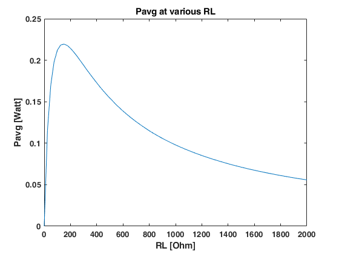

Contents
Genpath simulation program using simulink
clear all; close all; clc;
Set Parameter
constant parameter
r1 = 0.75*10^-2; %m r2 = 3*10^-2; %m k = 350; %N/m Jp = 10^-5; %kgm^2 m = 0.16; %kg RG = 50; %Ohm L = 10^-3; %H Kt = 0.048; %Vs/rad % variable parameter Jg = (r1^4/r2^4)*Jp; %kgm^2 RL = 400; %Ohm M = m+Jp/(r2^2)+Jg/(r1^2);
Run simulation
t = 0:0.00001:0.8; %time for simulation 0.06993 sim('Genpath_simulink',t);
Power Output
Vg = Kt*wg;
Irms = rms(I);
Pavg = Irms^2*RL;
fprintf('Power generate = %6.8f Watt\n',Pavg);
Power generate = 0.17278336 Watt
Loop various RL
Pd = 0; %collect Pavg Rd = 0; %collect RL ic = 25; %increase step for i = 1:2000/ic; Rd(i+1) = Rd(i)+ic; RL = Rd(i+1); sim('Genpath_simulink',t); Pd(i+1) = rms(I)^2*RL; end plot(Rd,Pd); xlabel('RL [Ohm]'); ylabel('Pavg [Watt]'); title('Pavg at various RL');